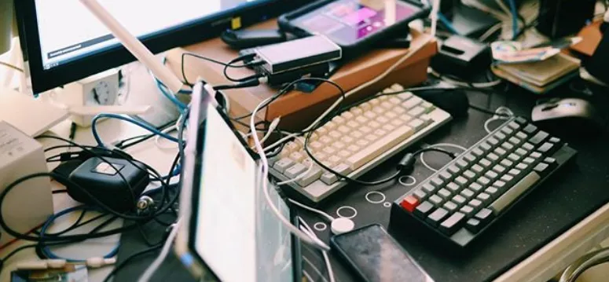
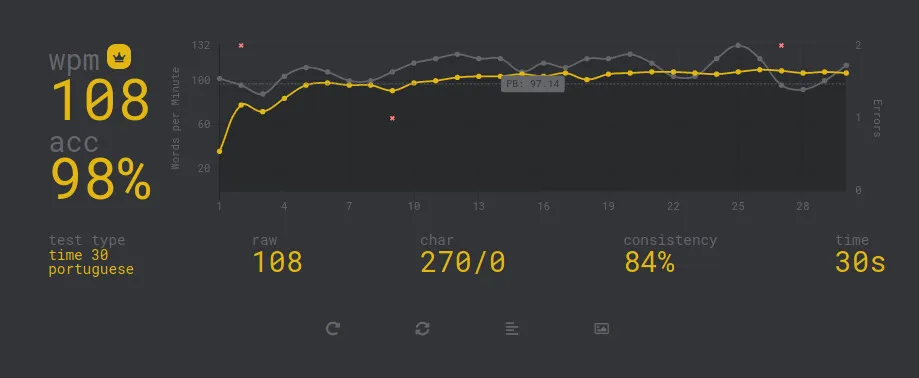

twitter @denislee

Lembro da primeira vez que eu entrei em contato com um computador. Acredito que eu tinha os 12 anos (ou algo próximo disso). O ano era acredito que era 1996. Mal existiam computadores aqui no Brasil. Tudo nesse equipamento havia me fascinado. Tudo era mágico. E, de todas as parte do computador, o teclado era a maneira qual poderíamos interagir com a máquina. E, por esse motivo, acaba ganhando uma atenção especial por quem usa. Você precisava saber onde estavam as teclas para se comunicar com o artefato. Saber o que faz cada tecla. Teclado. Dígito. Digital. (Essa sequência de palavras não teve sentido algum, mas achei bonito e poético.)
Então, a primeira vista, o julgamento que tínhamos se a pessoa possuía o conhecimento sobre o computador era diretamente proporcional a sua habilidade e destreza sobre o teclado (ok, o mouse também, mas não era tão mágico como o teclado). Uma referência da falha. Mas era o que tinha para época.
Passado um tempo e descobri que era tudo bobagem.
Porém, tive oportunidade de ser apresentado pelo meu irmão o editor de texto chamado “Vim”. Ele não usava efetivamente o editor em si, mas fez uma bela duma propaganda dizendo toda a filosofia por trás do editor. O sentido do posicionamento da mão direita sobre as teclas específicas. A falta de necessidade de usar o mouse para ser mais eficiente na navegação no texto. Enfim, você já deve conhecer toda essa história. Só sei que eu comprei a ideia e quis experimentar.
Logo encontrei a primeira dificuldade. Aquele posicionamento da mão direita, não fazia nenhum sentido para mim. Nunca havia posicionado o indicador da mão direita na tecla “J”. Aliás, nunca havia entendido o motivo de existir essa marcação nas teclas “J” e “F”. Então, a ficha caiu. Eu precisava fazer um curso de digitação. Tinha um passo antes que eu deveria cumprir antes de se quer começar a imaginar a usar esse editor de texto tão simples, porém com muita filosofia por trás (com a promessa de transformar você na pessoa mais eficiente do mundo).
Encontrei alguns sites que ensinavam a digitar corretamente. E se você já chegou a fazer esses exercícios e tem uma força de vontade monstruosa; sabe que eles viciam. Sim, os sites de você treinar e ter dores nos dedos. Dedos que antes foram forjados a não ter disciplina e moviam livremente. Sem regras. Sem normas. Sem se importar em trombar em teclas erradas, ou recorrer à ajuda dos seus queridos olhos (já ocupados em fazer muitas outras tarefas). Eu fiquei viciado nesse sites.
Em pouco tempo, pode já começar a digitar sem olhar para o teclado e isso já foi o suficiente para embarcar na aventura de aprender a usar o Vim (layout que eu sempre usei e uso até hoje. Inclusive, esse texto está sendo escrito no… Emacs, mas essa é uma história que ficará para próxima). E nunca mais tive mais interesse em aumentar a minha velocidade ou precisão da minha digitação. Toda vez que eu fazia alguma medição, ficava entre 60 a 80 (máx).
Certo, confesso que, uma vez ou outra eu tentava quebrar o limite, testando as minhas habilidades no site de corrida de digitação. mas nunca tinha algo fora do comum. Achava que eu, realmente, havia chegado no meu limite.
Então, descobri que existiam novos layouts de teclados. Dvorak, Colemak, etc. Todos com o objetivo de consertar o falho QWERTY que tanto usei.
Pronto! Encontrei a solução para poder ultrapassar a meta dos 100 palavras por minutos. Estava empenhado em começar a finalmente configurar o meu teclado e começar novamente com passos de bebê.
Estava, até eu encontrar esse vídeo. (Não precisa assistir ele, vou resumir no próximo parágrafo.)
https://www.youtube.com/watch?v=a2Nb9QVujgU
O garoto registrou a epopéia e trabalho que teve para sair do QWERTY e cair no Workman. Passou 3 meses só usando esse teclado. Ótimo, com certeza ele vai conseguir digitar mais rápido, certo? Errado. Não só ele não digitava mais rápido como antes, mas como ele conseguiu esquecer como digitar usando o QWERTY. Ou seja, só prejuízo.
E outro fato curioso é o vídeo que ele encontrou ao pesquisar se é possível alternar facilmente entre layouts diferentes. E adivinhe qual vídeo ele encontrou?
https://www.youtube.com/watch?v=iajFOneci04
Um outro garoto que alterna entre três layouts. Sim, é possível alternar, mas o mais incrível (além dele conseguir alterar os teclados sem intervalo algum e manter uma velocidade surreal), é o fato dele digitar mais rápido no QWERTY. Motivo? Dentre os três layouts, o que ele mais praticou, com certeza foi o QWERTY.
Enfim, fiquei com o QWERTY no final das contas. E comecei a praticar nesse velho layout que sempre me acompanhou durante a minha vida.
Encontrei sites interessantes como:
E adivinhem só, depois de alguns dias de treino o que aconteceu?

Uhul!
recent Posts